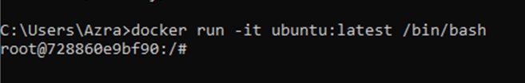
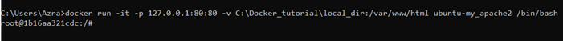
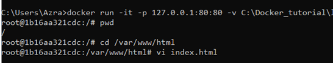
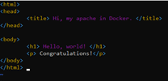
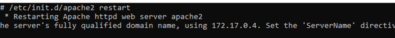
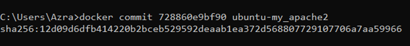

Using Docker to Setup a Webserver

Install Docker on your computer
- Open the command prompt on your computer
- Type in the command:
- If you get the following response, then it is working correctly:
Pull an Ubuntu Image from Docker hub using the command:
Install vim and apache2 in a docker container then save the container.
- Run Ubuntu Image to start a docker container and log into this Ubuntu container with the following command:
docker run -it ubuntu:latest /bin/bash After you do this, the prompt will show you the container number. The number for this container is 728860e9b0 - Install Applications in this Ubuntu container:
- Use the command:
- Install apache 2 using the command:
- Install Vim Editor by using the following command:
- Exit the Ubuntu container with the command:
- Commit the container to create a new docker image:
- Check the container with this command:
- Create a new docker image with this command:
- Check the new image using the command:
-
4. Sharing Data between a Docker Container and a Host:
a. Find the file path for "docker tutorial in your directory.
b. Use the command: “docker run -it -p 127.0.0.1:80:80 -v C:\Docker_tutorial\local_dir:/var/www/html ubuntu-my_apache2 /bin/bash”
- 
c. If the file path is different, make sure you include the correct file path in the command
d. In the above filepath:
- -it: indicates you are logging into the interactive shell
- -p: exposes a port of the docker container
- “docker run -it -p 127.0.0.1:80:80 -v C:\Docker_tutorial\local_dir:/var/www/html ubuntu-my_apache2 /bin/bash”
- -v: binds a host directory to the docker container
- /var/www/html: is the default location for the entry webpage of the directory (we can use index.html)
-
5. Using the VI Editor In Unix
a. Check the present working directory with command: pwd. Go into html directory “/var/www/html” with command: cd/var/www/html
- 
b. Create an “index.html” file using command: vi index.html
c. You will now be in the VI/Vim editor file index.html:
- (1) In order to edit within the editor, press the “i” key to begin editing.
- (2) You will see “--INSERT--” at the bottom of the command window which indicates that you can begin typing html source code.
- (3) Write a sample code to see if it works.
- (4) After completing your sample code for the index.html file, press “ESC” computer key and this will bring you to the bottom of your command window. You will type “:wq” to save and quit the editor
- 
- (5) So – here is the file path: C: /Docker_tutorial/local_dir/index.html
-
6. Using Docker to host your website
a. Enter your docker container terminal from your Docker Desktop
b. Start apache service using the following command in the container:# /etc/init.d/apache2 restart
- 
c. Next, enter the following command: docker run -it -p 127.0.0.1:80:80 -v C:\Docker_tutorial\local_dir:/var/www/html ubuntu-my_apache2 /bin/bash (Make sure you check the file path)

And this is how you use Docker to Host your Website!!
Check if Docker is working using the following instructions:
docker run hello world
docker pull Ubuntu
apt-get update
apt-get install apache
Note:When the response asks for a time zone - enter the correct number for your time zone
apt-get install vim
exit
docker ps-a
docker commit 728860e9bf90 ubuntu-my_apache2

728860e9bf90 is the container ID and ubuntu-my_apache2" is the name of a new Docker image.
docker images